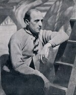
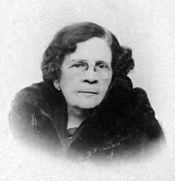
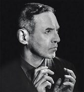

Benito Quinquela Martin
Benito Quinquela Martín (1890–1977) fue un pintor argentino nacido en el barrio de La Boca, cuya obra capturó con fuerza y sensibilidad la vida portuaria de Buenos Aires. Hijo adoptivo de una familia humilde, transformó su entorno cotidiano en una fuente inagotable de inspiración. Sus pinceladas enérgicas y su uso vibrante del color reflejan el movimiento, el esfuerzo y la pasión de los trabajadores del puerto. A través de su arte, Quinquela logró elevar las escenas del trabajo obrero a la categoría de símbolo nacional, convirtiéndose en uno de los artistas más representativos de la identidad argentina del siglo XX.

Eugenia Belín Sarmiento
Nacida en San Juan, Eugenia Belín Sarmiento es mejor recordada por el célebre retrato que hizo de su abuelo, el presidente Domingo Faustino Sarmiento. Sin embargo, esta artista tuvo una larga y prolífica carrera: realizó muchas otras obras, desde retratos hasta pinturas de flores, paisajes, aves y bodegones. Participó en la Primera Exposición Anual de Pintura, Dibujo y Escultura para artistas de América del Sur y su hermano, el diplomático Augusto Belín Sarmiento, regaló una de las obras de Eugenia a Auguste Rodin, que hoy permanece en el Museo Rodin de París.

Xul Solar
Xul Solar, cuyo nombre real era Óscar Agustín Alejandro Schulz Solari, fue más que un pintor revolucionario: fue una de las figuras más celebradas de la esfera intelectual argentina por su expansivo conocimiento en múltiples disciplinas. Su obra, aunque de estética surrealista, es mejor definida con el término “fantástica”, debido tanto a la amplitud de su imaginario como a su experimentación con el color y la composición. Tras estudiar las vanguardias europeas, tomó los elementos que más le marcaron de cada una para desarrollar un estilo personal sin igual.